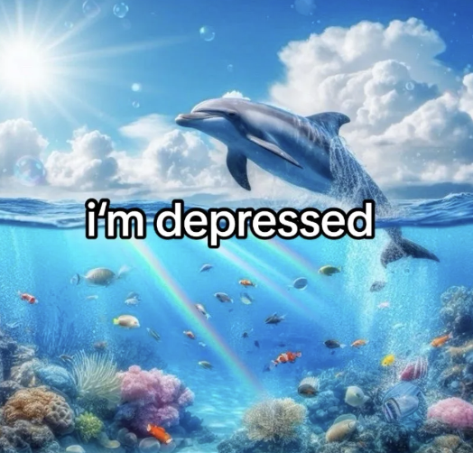

Pop songs that you couldn't escape this year:
- Kendrick Lamar - Not Like Us
- Chappell Roan - Good Luck, Babe!
- Sabrina Carpenter - Please Please Please
- Charli XCX - Von Dutch
- Future, Travis Scott, and Playboi Carti - Type Shit
Meme Hall of Fame:
- "I Just Want to be part of your Symphony" Dolphins

- Chill Guy

- Hawk Tuah made a comeback
BONUS:
Jumpscare warning
Actual jumpscare warning
{kind=link}
- sigma male
- lone wolf type who is successful but doesn't conform to traditional social hierarchies
- skibidi
- A reference to the viral "Skibidi Dop Dop Yes Yes" meme song by Little Big
- rizz
- charisma or charm, particularly in the context of attracting a romantic interest
- gyatt
- derived from "goddamn" to express admiration or surprise, often used to comment on someone's Butt
- no edging in class
- humorous or mocking phrase likely referring to the act of self-control, used out of its original context in a school setting
- bussing
- something that is really good or delicious, often used to describe food
- baby gronk
- a young football prodigy, sometimes used metaphorically to describe someone showing great potential
- only in ohio
- meme implying that strange or bizarre events supposedly only happen in Ohio
- goofy ahh
- used to describe something or someone as silly or ridiculous
- goated with the sauce
- someone who is exceptionally skilled or impressive, "goat" being short for "greatest of all time"
- chungus
- meme featuring a large, rotund version of Bugs Bunny, often used humorously to describe something large or excessive
- poggers
- emote from Twitch used to express excitement or amazement